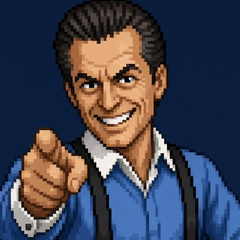

CÓMO JUGAR

Pilas, novato. Así funciona la Calle. Apréndetelo una vez y después ve a hacer plata.
Por ahora el juego está en inglés. Esta guía te lo explica en español.
Efectivo y el pago diario
Todos empiezan con el mismo efectivo. Cobra tu pago una vez al día en la mesa de operaciones (Trade).
El efectivo solo sale de operar, de los dividendos, del sueldo que te pagas como CEO y de ese pago.
¿Casi en la quiebra? Declárate en bancarrota una vez por semana y arranca de nuevo, pero te quedas por fuera de la carrera de esa semana.
Operar mueve los precios
Cada empresa cotiza contra su propio pool, así que cada compra sube el precio y cada venta lo baja. Cuanto más grande la operación, más grande el movimiento, y la orden te lo muestra antes de que hagas clic.
Las noticias y los resultados cambian lo que una empresa vale de verdad, y el precio se va acercando a ese valor. Lee las noticias.
Pide prestado con margen contra tus acciones cotizadas para comprar más. Los intereses se acumulan todo el tiempo que debas, y si tus acciones caen demasiado el juego se queda con tu efectivo y luego vende tus acciones al fondo rival para cubrir el préstamo.
La economía
Tres números mueven toda la Calle: la tasa de la Fed, el PIB y el precio del petróleo. Van de primeros en el ticker.
Una subida de tasas golpea a la tecnología y ayuda a los bancos. El petróleo caro impulsa a la energía y aprieta a los consumidores. Un buen informe del PIB levanta a casi todos.
Cada informe y cada sacudida del petróleo sale primero en las noticias. Léelas y verás venir el movimiento.
Futuros
OIL y GOLD están arriba del todo en la Calle. Abre uno para apostar a su precio sin tener nada. Ve en largo (LONG) si crees que va a subir, en corto (SHORT) si crees que va a bajar.
Pon un margen de tu efectivo y escoge tu apalancamiento. El apalancamiento multiplica la apuesta, así que cada movimiento del precio te hace ganar o perder esas veces más.
Abrir y cerrar cuestan cada uno una pequeña comisión que sale del juego. Todos tus futuros abiertos juntos pueden sumar como mucho la mitad de tu patrimonio neto.
Si el precio se va demasiado en tu contra, la posición se liquida: recuperas lo que quede de tu margen, nunca pierdes más de lo que pusiste, y las noticias se lo cuentan a toda la Calle.
Nuevas empresas en bolsa
Cada semana una empresa nueva sale a bolsa en la Calle. Las noticias y Mr. Greed te avisan primero.
Si tienes suficiente GREED puedes comprar antes de la campana con descuento. Esas acciones se desbloquean cuando termina la primera hora de cotización.
Cómo le va a un debut depende de su sector y de la economía de ese día. Mira el ticker antes de comprar.
También puedes sacar a bolsa tu propia empresa: escoge un nombre, un tamaño y un sector, compra tu participación de control y dirígela desde la campana.
Tomar el control
Si tienes una parte más grande de una empresa que cualquier otro, por encima de la línea de control de su medidor, la diriges. Si pierdes el primer puesto o caes por debajo de la línea, quedas por fuera.
Cuando dos jugadores están cerca, la Calle lo llama una pelea por el control. Muévete ya.
El despacho del CEO
Dirige una empresa y se abre su despacho: págate un sueldo, reparte dividendos, recompra acciones o emite nuevas.
Un sueldazo desocupa la caja de la empresa, y eso tumba las acciones que tienes. Tú decides.
Jugadas sucias y que te pillen
Riega un rumor, mete una demanda temeraria o infla tu propia acción. Primero consigue abogados: la cobertura baja la probabilidad de que te pillen, pero nunca a cero.
Cada jugada espera un rato antes de hacer efecto, y su objetivo puede poner una queja en ese tiempo.
Compra un put sobre la acción de un rival y te paga si el precio medio de esa acción durante la vida del put termina por debajo de tu precio de ejercicio. Riega un rumor sobre ella justo después y la caída te paga a ti. Los puts se pagan en efectivo del juego, y no puedes comprar uno sobre una empresa que diriges.
Un call es la apuesta contraria: te paga si el precio medio de esa acción durante su vida termina por encima de tu precio de ejercicio, y tampoco puedes comprar uno sobre una empresa que diriges.
Si te pillan, te multan, te bloquean las jugadas por un tiempo y quedas bajo investigación: nada de tomar el control, ni salidas a bolsa, ni montar una empresa, ni acciones previas a la salida a bolsa hasta que se cierre. Puedes seguir comprando y vendiendo.
Cada jugada sucia te cuesta karma. Por debajo de cero, cada jugada que hagas y cada dato que operes tiene más probabilidad de que te pillen. Mantén las manos limpias y vuelve.
Compra un dato de información privilegiada y te digo qué le va a pasar a una empresa y cuándo. Comprarlo es seguro. Si operas esa empresa antes de que pase, los reguladores pueden darse cuenta: si te pillan, te multan con una parte de lo que operaste, te bloquean las jugadas y te quedas sin datos por un tiempo.
Cada tirada usa una semilla que el juego publica después, así que cualquiera puede verificarla.
Peleas por el control
Si cruzas el cinco por ciento de una empresa, sale en las noticias para que todos lo vean. Las compras en el pool más allá de esa línea cuestan de más.
Una oferta de compra le ofrece a todos los accionistas una prima sobre el precio, y se queda abierta un día.
Nadie está obligado. Los accionistas deciden si venden en ella, y los bots venden cuando la prima es suficiente.
Unos bots asaltantes cazan empresas cuyo jefe tiene menos del treinta por ciento. Uno compra primero una parte, luego ofrece.
El greenmail: le pagas al asaltante una prima por su parte, primero con el efectivo de la empresa y el resto con el tuyo, y el asaltante se va.
La píldora venenosa: todos los accionistas menos el oferente reciben otra mitad de sus acciones, gratis y bloqueadas un día. Cuesta una parte del valor de la empresa, primero con el efectivo de la empresa y el resto con el tuyo. Mata la oferta y solo se puede usar una vez por semana, solo contra una oferta que pueda quitarte el control.
Temporadas y premios
Cada semana ordena a los jugadores según cuánto creció su patrimonio neto, valorado al precio medio de un día, así que un empujón de última hora no la gana.
Los diez primeros de cada semana ganan una parte del pozo semanal. La tabla de imperios lleva la cuenta de todos los tiempos.
Esos puestos dan puntos, y quien suma más puntos gana una liga de cuatro semanas y una liga de doce semanas.
Monta más empresas que nadie en un bloque de cuatro semanas, con cada una cotizando todavía por encima de su precio de salida a bolsa cuando termina, y ganas el premio IPO.
Los premios se pagan en acciones, nunca en GREED, con lo que la tesorería ha ganado de verdad. Los reclamas en la página Prizes.
Una parte de todo va para el creador del juego, pagada en la cadena cada semana, para que cualquiera lo verifique.
GREED
GREED es la moneda de la Calle. La mantienes para jugar, y con suficiente escuchas mi Inside Line.
Se queda en tu billetera todo el tiempo, y tenerla te da recompensas en acciones. Nunca se convierte en efectivo del juego.
Si caes por debajo del mínimo, por venderla o moverla, pierdes tus premios de la semana, de las cuatro semanas y de las doce semanas en las que estás. Vuelve a completar el mínimo y los siguientes quedan limpios.
Las jugadas, la cobertura, las quejas, el cumplimiento, montar una empresa, las rondas de financiación y los trámites de salida a bolsa cuestan dólares, que se pagan en ETH, USDC o GREED desde tu billetera. La mitad de cada pago en ETH o USDC va a los pozos de premios, la mayor parte del resto compra GREED para la tesorería y una pequeña parte paga los gastos de funcionamiento. El GREED va directo a la tesorería. Operar en el mercado sigue siendo gratis.
VOLVER A LA CALLE